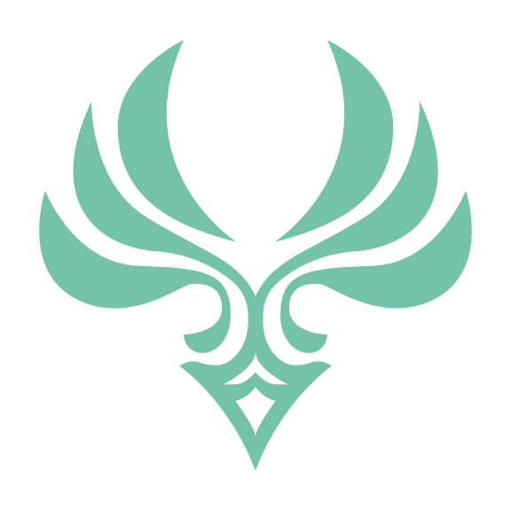
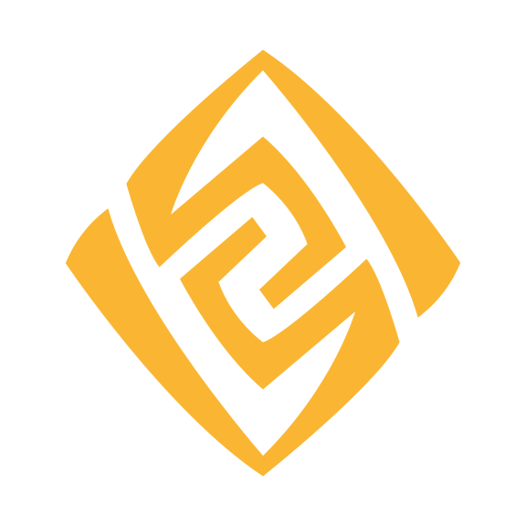
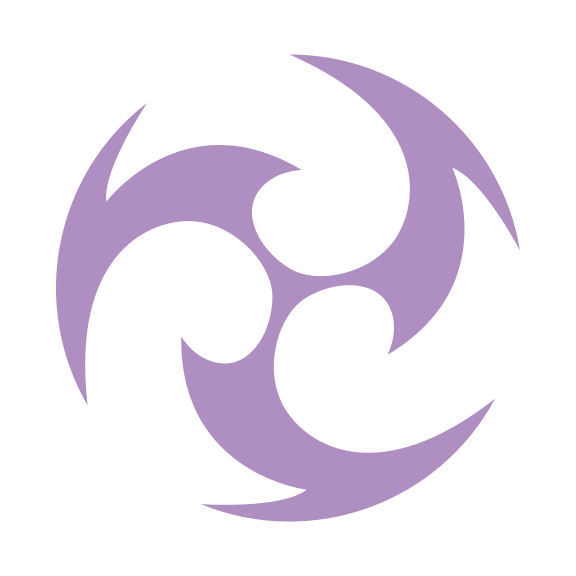
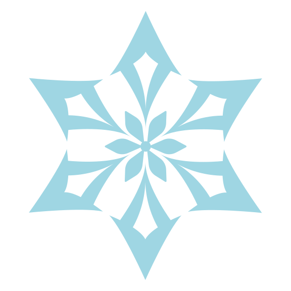
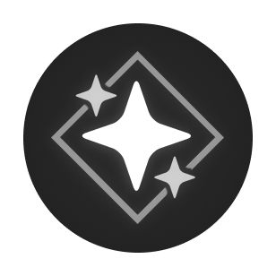
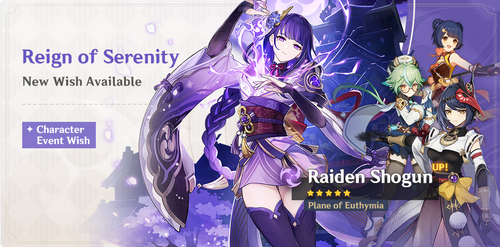
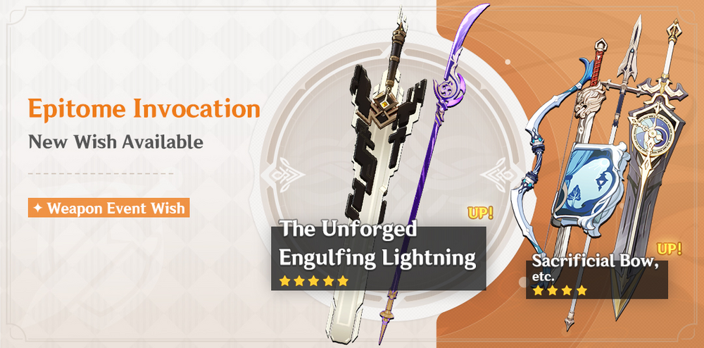
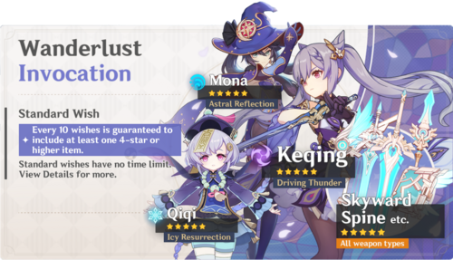

Genshin Impact is a gacha, RPG, and open-world game, that released in September of 2020. It is one of the best-selling games right now. It features open-world, puzzle, story mechanics that will and have intrigued every player that has come to play this game. I would recommend this game to anyone who likes anime and stories. The picture in the background is the place where you start in, Mondstadt. The story progresses as the main character is seperated from his/her sibling, and goes through a whole world full of twists and turns, just to find this lost sibling of theirs. Personally, I love this game and have been playing ever since its launch. Given the chance to advocate this game to others, I took the chance and made it my project topic.
fig 1.1-1.4: Versions, 2.1, 1.2, 1.4, and 1.3 of Genshin Impact
The Seven Elements of Teyvat




Teyvat is a continent that has seven colonies and seven elements. One corresponds for each colony. Mondstadt has Anemo, Liyue has Geo, Inazuma has Electro, Sumeru has Dendro, Fontaine has Hydro, Natlan has Pyro, and Snezhnaya has Cryo. When two elements come together, it forms an elemental reaction. I am not able to list all here so please watch this video for an explanation.
Elements Guide by Moga

WISHING



Wishing is one of the key features of Genshin Impact. It allows you to gain new characters and weapons. In wishing, you can get a 3-star, a 4-star, or a 5-star weapon/character. The way that the wishing system works is that there is a chance you get a specific rarity with the 5-star chance being the lowest. The 3-star items have a 85.4% chance of dropping, 4-stars have a 5.1% chance and a 5-star has a 0.6% chance. In the limited character banners have a pity system which starts at soft pity which is 75 pulls, and hard pity at 90 pulls. Hard pity guarantees a 5-star, soft pity has a high chance of a 5-star. On the weapon banner, soft pity is 65 pulls and hard pity is on 80 pulls. For the limited character banner, when a 5-star is pulled. There is a 50% chance for it to be the limited character and 50% chance for it to be one of the standard banner characters which are, Jean, Diluc, Mona, Keqing, and Qiqi. When a standard banner character is pulled, the next 5 star is guaranteed to be the limited 5-star character. For the weapon banner it is different. The weapon banner usually has 2 different limited weapons that you can select which one you want to go for. Once selecting, after 2 5-star limited weapons which are not the one you have selected, you will be guaranteed that the next 5-star will be the one you chose. If you get the 5 star earlier than the pity, this system will be reset. If you did not get my explanation, please watch this video below.